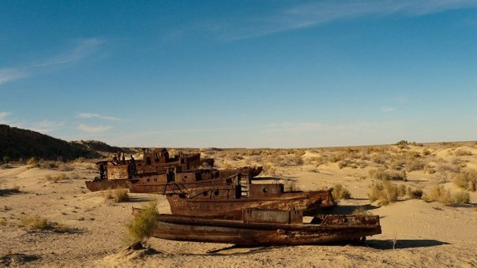
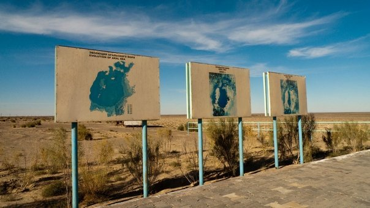
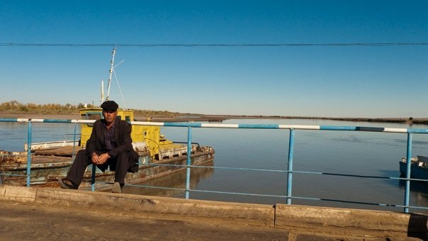
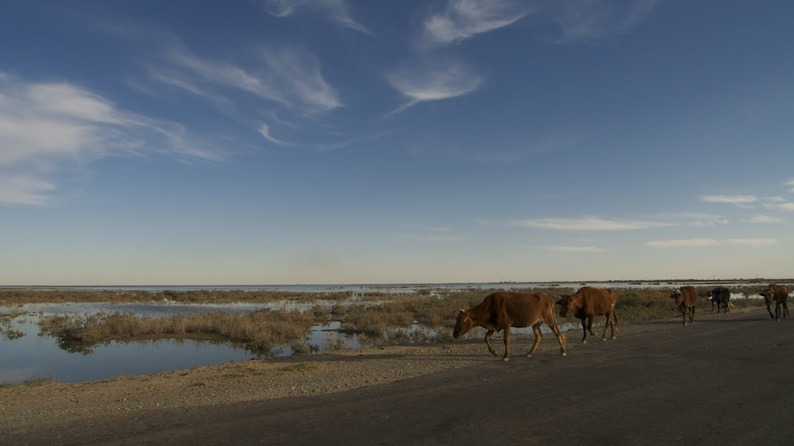
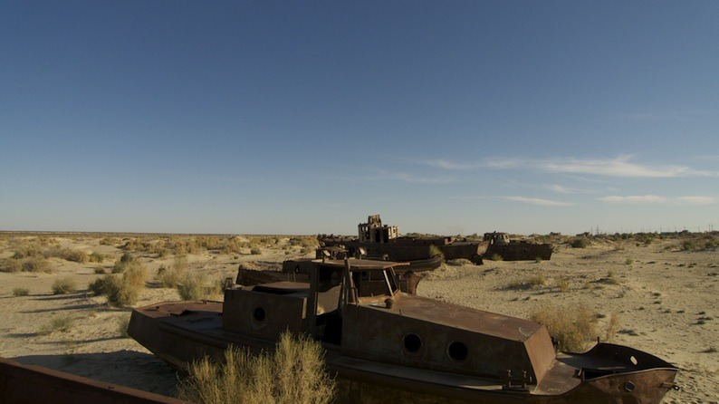
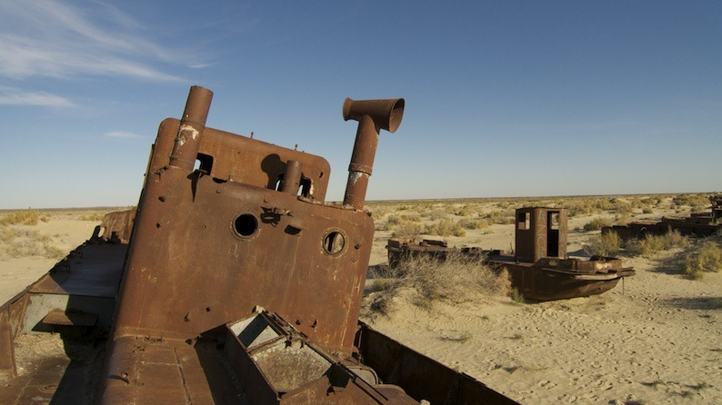
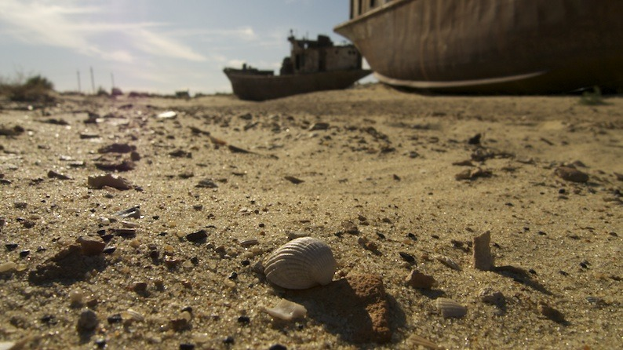
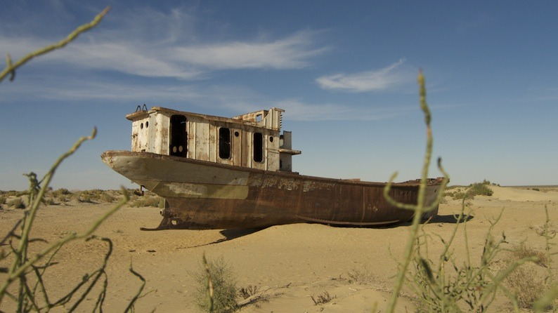

Sat, 14 Aug 2010 10:35:00 · Uzbekistan · AralSea
aral sea elegy karakalpakstan republic part 1








Aral Sea Elegy, Karakalpakstan Republic - part 1
These images of the former Aral Sea were taken in and around Moynaq, once a thriving fishing town by the sea now a ghost of its former self due to the receding shorelines of Aral Sea. Located in Karakalpakstan Republic, North of Uzbekistan near the Kazakhstan border.
More photos with better quality, see here: http://bit.ly/Pc3Rk -
Info on Aral Sea disaster, see here: http://bit.ly/eYNSN -
Check on Google Earth to see the exact location of the remaining Aral Sea in Uzbekistan/Karakalpakstan region, which is about 250km north of where these picture were taken.